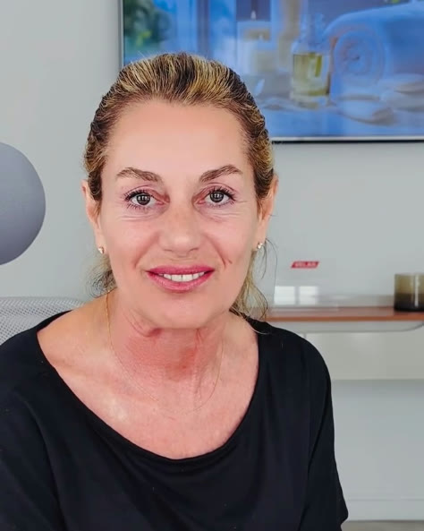
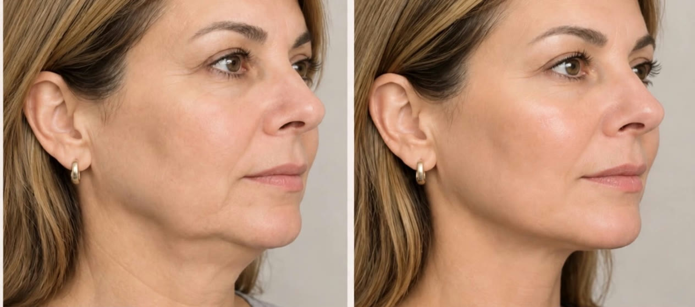
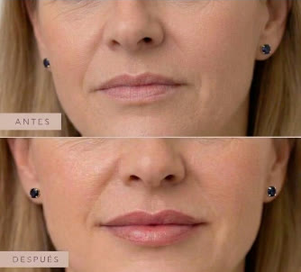
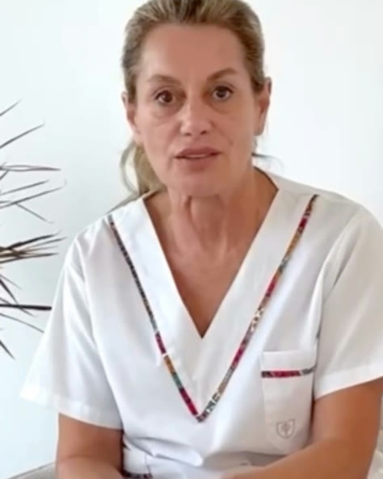

Dra. Martha Alvarez LamasCirujana plástica · Especialista en láser Diodo
Redefiní tu contorno sin cirugía.
Endolifting y lipólisis láser con tecnología láser avanzada. Recuperación rápida, sin cicatrices ni hematomas.
Los botones de contacto se activan cuando arrancamos con la versión oficial.

- Cirujana plásticaespecialista en láser Diodo
- Facial y corporalestética sin cirugía
- Downtime mínimoen Endolifting
- RecoletaAgüero 1595
Tratamientos
¿Qué querés trabajar?
Endolifting® y lipólisis láser
Contorno redefinido, sin cirugía
Un tratamiento con láser, facial o corporal. La recuperación es rápida, sin cicatrices ni hematomas.
- Facial
- Corporal
- Downtime mínimo
- Sin cicatrices
- Sin hematomas
Láser fraccionado no ablativo
Renová tu piel con tecnología láser no invasiva
Rejuvenecimiento facial, también en cuello y escote.
- Rejuvenecimiento facial
- Cuello y escote
- Peribucal “código de barras”: 3 sesiones
Fillers con ácido hialurónico
Perfilamiento de labios
Más definición, mayor armonía y resultados naturales.
- Perfilamiento de labios
- Fillers
- Ácido hialurónico
Láser Diodo
Rosácea y arañas vasculares
Tratamiento con láser Diodo, su especialidad.
- Rosácea
- Arañas vasculares
Antes y después
Resultados naturales.

AntesDespués

La doctora
Dra. Martha Alvarez Lamas
Cirujana plástica, especialista en láser Diodo. Estética facial y corporal en Recoleta.
En la prensa
- Revista Intercountries“Endolifting: una nueva mirada sobre el rejuvenecimiento”
- Mujer FelizNota en Recoleta
Cómo es la consulta
Tres pasos para tu turno.
- I
Nos escribís
Por WhatsApp, contándonos qué querés trabajar.
- II
Consulta
En el consultorio de Agüero 1595, Recoleta, para ver cuál es el tratamiento indicado.
- III
Tus sesiones
Coordinamos las sesiones del tratamiento, en el día y horario que te quede mejor.
Consultas y turnos
Reservá tu turno, tu piel lo necesita.
Agüero 1595, Recoleta · Barrio Norte, Agüero y Santa Fe.
Los botones de contacto se activan cuando arrancamos con la versión oficial.